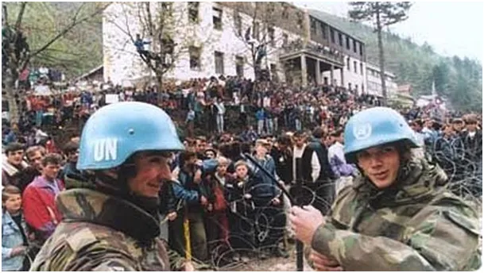

“Nosił wilk razy kilka, aż ponieśli i wilka”
Na cmentarzu ofiar masakry w Srebrenicy z 1995 roku jest niecałe 7000 nagrobków, a międzynarodowy trybunał uznał to za największe ludobójstwo od czasów II Wojny Światowej.
Radovan Karadżić został skazany na dożywocie, w historii zapisał się jako "Bałkański Rzeźnik". Postępowy świat zachodu, szczególnie prezydent USA, nie widzi nic złego w blisko 40 000 cywilnych ofiarach regularnej armii w Gazie. Do tamtej masakry by nie doszło, gdyby holenderscy, uśmiechnięci żołnierze ONZ nie oddaliby Serbom, bośniackich cywilów.

Serbowie spakowali ich do autobusów i zawieźli do lasu. Dożynanie niedobitków po wsiach trwało prawie 3 tygodnie.
Sprawiedliwości na tym świecie jest mało, ale jak widać dobre, stare mechanizmy naszej łacińskiej cywilizacji jeszcze działają. Osobiście jestem przeciwny dożywotniego karmienia takich zbrodniarzy, chrześcijaństwo nie apologetyzuje życia ponad wszystko.
Paweł Klimczewski